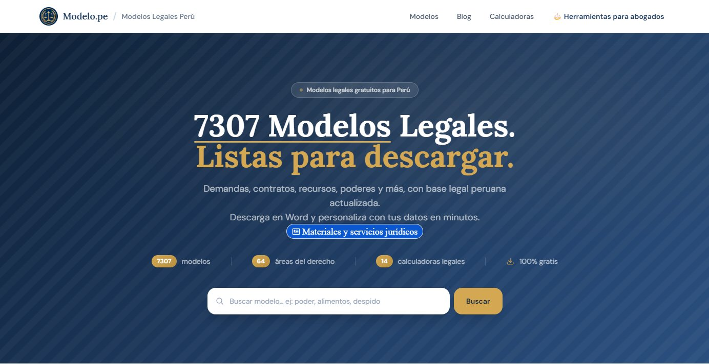
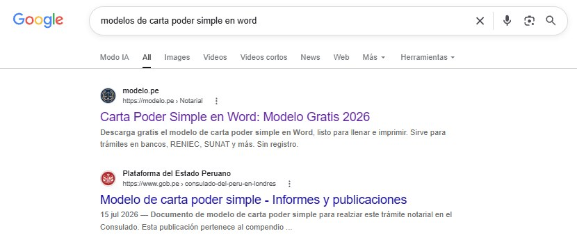
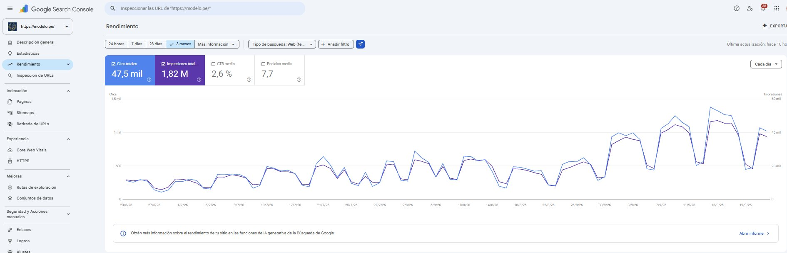
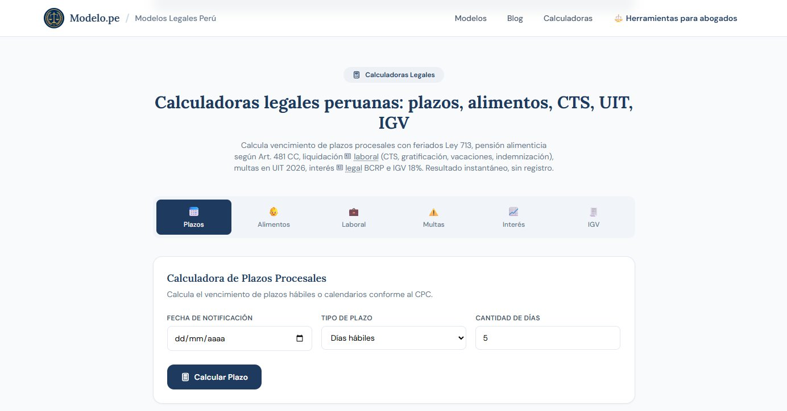
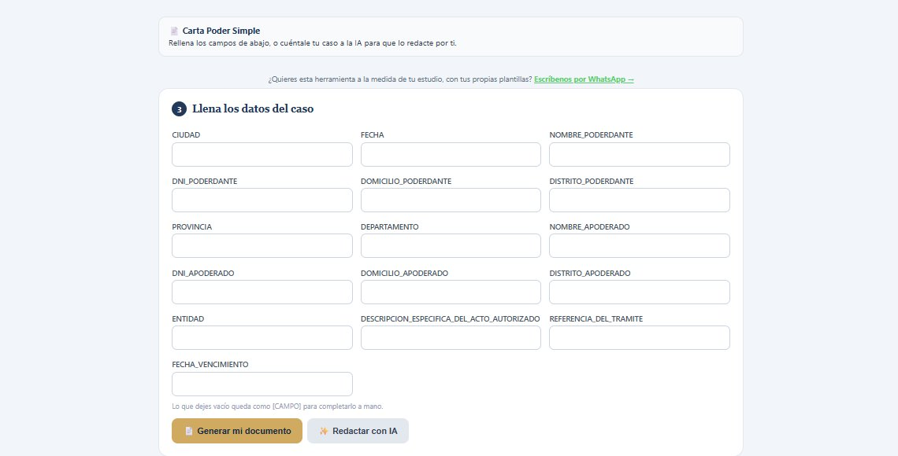
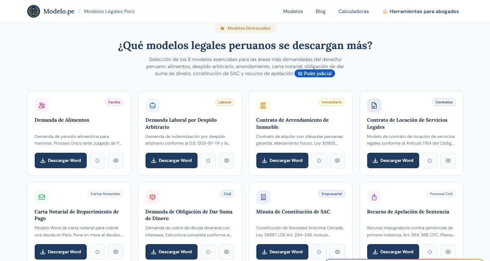
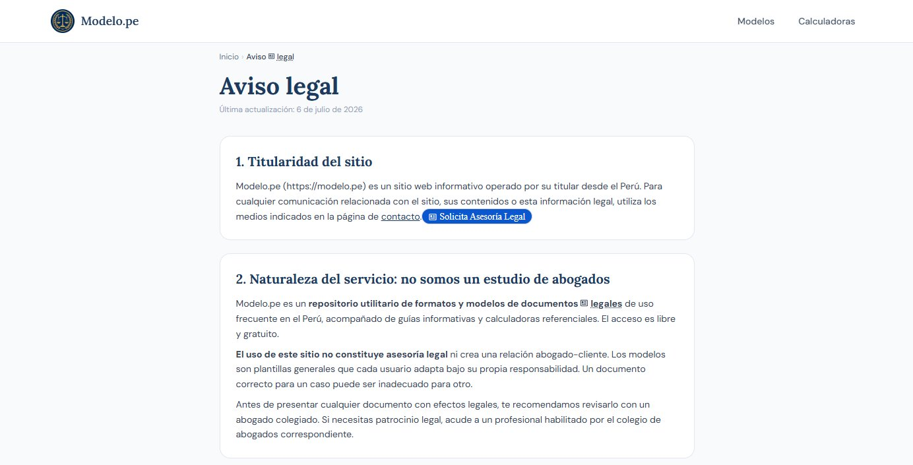
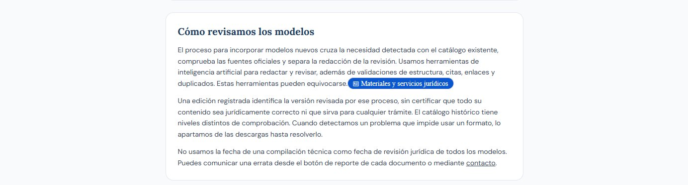

Creatividad, Actividad y Servicio




Modelos legales gratuitos para todos los peruanos · mayo 2026 y sigue creciendo
Que cualquier persona en el Perú pueda conseguir gratis los documentos legales que necesita para sus trámites. Para eso hice una página donde entras, buscas el documento y lo descargas. No cobra nada y no hay que registrarse. Pensé sobre todo en la gente que no tiene plata para pagarle a un abogado cada vez que necesita un papel.
| Semana | Actividad | Responsable |
|---|---|---|
| Semana 1 (12–18 mayo 2026) | Investigación del problema y del mercado de modelos legales existentes. | Dylan Díaz |
| Semana 2 (19–25 mayo 2026) | Diseño y desarrollo de la estructura de la página web modelo.pe. | Dylan Díaz |
| Semana 3 (26 mayo–1 junio 2026) | Redacción y carga de los primeros modelos, calculadoras y glosario. | Dylan Díaz |
| Semana 4 (2–8 junio 2026) | Publicación del sitio, redacción del aviso legal y difusión. | Dylan Díaz |
Una computadora con conexión a internet, un dominio web (.pe) y hosting para el sitio, herramientas de desarrollo web y herramientas de inteligencia artificial, que usé tanto para redactar los documentos como para programar partes de la página.
Lo hice yo solo: la página, los documentos y el mantenimiento, apoyándome bastante en la inteligencia artificial. Además, un amigo abogado de mi papá me orientó al principio para entender qué necesitaba de verdad la gente.




La idea salió de dos cosas que pasaron casi al mismo tiempo. Por un lado, un amigo de mi papá que tiene un bufete me contó que hasta a él, siendo abogado, le costaba encontrar un solo lugar de dónde sacar modelos de documentos: estaban todos separados, cada uno en una página distinta. Por otro lado, mi abuela estaba atravesando un juicio y le costaba muchísimo encontrar los modelos legales que necesitaba.
Me puse a buscar yo mismo para ayudarla y fue casi imposible: no había un sitio específico de dónde sacarlos, todo estaba desperdigado. Ahí me di cuenta de que, si a un abogado con su propio bufete le costaba, a alguien que no sabe del tema y encima no puede pagar uno le tenía que ser mucho peor. Así que quise armar ese lugar que no existía.
Empecé mirando otras páginas legales para ver qué les faltaba. Después armé la página y pensé cómo ordenar los documentos para que uno encuentre rápido lo que busca. Los borradores de los modelos los generé con inteligencia artificial, porque redactar 4000 documentos a mano habría sido imposible, y después los revisé y los ordené por áreas del derecho. La IA también me ayudó bastante a programar partes del sitio. Con el tiempo creció más de lo que había planeado: hoy tiene 7307 modelos en Word ordenados en 64 áreas del derecho, 14 calculadoras legales (plazos, pensión de alimentos, beneficios sociales y otras), un glosario y los valores oficiales 2026. Solo en los últimos 3 meses la página recibió más de 47 mil clics desde Google y apareció 1,82 millones de veces en los resultados de búsqueda. Lo sigo manteniendo.
Justamente porque los documentos salen de una IA y no de un abogado, puse un aviso legal bien visible en el sitio: son formatos referenciales, no están revisados por un especialista y conviene confirmarlos con un abogado colegiado antes de usarlos.
En este proyecto trabajé dos resultados de aprendizaje. Aquí me pongo un puntaje del 1 al 7 en cada uno y explico por qué.
Que la gente sin plata no pueda acceder a la justicia es un problema que pasa en todos lados, no solo acá. Con modelo.pe puse 7307 documentos legales gratis, y en solo 3 meses recibieron más de 47 mil clics desde Google. Entre lo que más buscan hay cosas muy concretas, como cartas poder, declaraciones juradas o si se puede pasar de la AFP a la ONP, que son trámites reales de gente común. No arregla el problema de fondo, pero es algo concreto que hice frente a una desigualdad real.
Sé cuántos clics recibe la página, pero no sé si los documentos de verdad les sirvieron en su trámite. Para llegar al 7 tendría que medir el impacto real: preguntarle a la gente cómo les fue, recoger sus comentarios y usar eso para mejorar los modelos que más se usan.
Publicar documentos legales es una responsabilidad grande: si alguien usa uno mal, lo puede perjudicar. Y en mi caso hay algo más: los documentos los generé con inteligencia artificial, no un abogado. Pude haberlo ocultado para que el proyecto se viera más serio, pero me pareció deshonesto. Por eso el sitio dice claramente que son formatos referenciales, que no están revisados por un especialista y que hay que confirmarlos con un abogado colegiado. Tampoco pido datos personales. Para mí, decir de qué está hecho mi proyecto y cuáles son sus límites es la parte ética más importante de todo esto.
Todavía hay cosas por mejorar: explico que uso inteligencia artificial en la página “Sobre”, pero no en el aviso legal, y los modelos aún no los revisa un abogado. Para llegar al 7 tendría que decirlo también en el aviso legal y conseguir abogados voluntarios que revisen los documentos más usados.
Esto empezó por el juicio de mi abuela y por un comentario del amigo de mi papá, y hoy lo usan miles de personas al mes. Todavía me parece raro pensarlo.
Lo que más me quedó fue aprender a ser honesto con lo que publico. En un tema legal, un error le puede complicar la vida a alguien, y era fácil caer en la tentación de que el proyecto pareciera más serio de lo que es. Decidí hacer lo contrario: decir que los documentos los hizo una IA y que hay que revisarlos con un abogado. Prefiero eso a que alguien confíe de más en mi página.
También aprendí bastante de programación y de cómo organizar tanta información. Y aprendí a usar la inteligencia artificial en serio: al principio sentía que apoyarme en ella era hacer trampa, pero igual tenía que entender el problema, saber qué pedirle y revisar todo lo que salía.
Si lo volviera a hacer, buscaría que abogados voluntarios revisaran los modelos, para que la gente pueda confiar más. Por ahora me quedo contento de haber hecho algo útil que sigue creciendo.
Demostración de la página funcionando: buscar un modelo legal en modelo.pe y descargarlo.
Cómo creo un modelo con inteligencia artificial y por qué es importante el aviso legal (transparencia y ética).
La herramienta para completar un documento: llenas los datos o le cuentas tu caso a la IA, y se descarga en Word gratis.
La página de inicio de modelo.pe ya publicada, con 7307 modelos legales gratis.
Los modelos que más se descargan, listos para bajar en Word.
Las calculadoras legales del sitio: plazos, alimentos, laboral, multas, interés e IGV.
Google Search Console: 47,5 mil clics y 1,82 millones de impresiones en los últimos 3 meses.
Buscando "modelos de carta poder simple en word", modelo.pe sale primero en Google, antes que la página del Estado.
El aviso legal: el sitio no es asesoría legal y recomienda revisar los modelos con un abogado colegiado.
En la página "Sobre" explico que uso inteligencia artificial para redactar y que puede equivocarse (transparencia y ética).
Ingresa la contraseña para editar los porcentajes